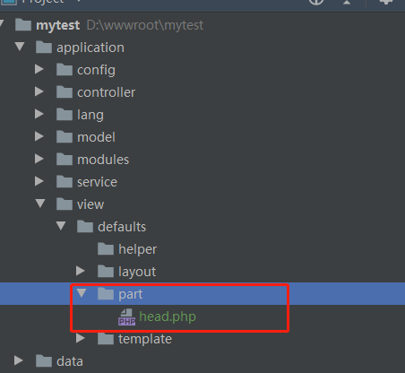

6.3 模板区块（Part）
1、什么是模板区块 模板区块就是多个模板文件复用的代码块。
2、如何新建模板区块
新建模板区块，只要模板目录下part目录新建区块文件即可，也可以分目录保存，在调用的时候注意路径即可。

3、如何调用模板区块
调用模板区块，要使用视图的showPart()方法。
格式如下：
showPart(path[, template])
参数说明：
| 名称 | 描述 |
| path | 必需。文件路径。是part目录下的相对路径。 |
| template | 可选。模板风格目录，默认为default。 |
应用实例
实例参见6.1_页面布局